Chapter1 網頁概論
I. WWW
架構
客戶端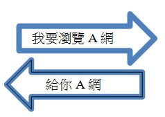伺服端-
URL(網址)
[資源取用方法]://[URL 位址]/[目錄]/…/[檔案名稱]Ex：http://www.w3schools.com/html/html_intro.asp
II. HTML
- HTML 的全名是「Hyper Text Markup Language」，即「超文件標記語言」。
- HTML 是可供任何瀏覽器解讀的共通語言，但是不同的瀏覽器，對 HTML 有不 太一樣的解釋，使得轉換ft來的效果也不盡相同。
- 其功能就是編寫網頁，用來將文字、圖片、聲音等顯示在網頁內，但是 HTML 語 言只能單向將網頁傳給瀏覽者，並無法產Th互動式的網頁，所以需要 JavaScript 的輔助。
III. JavaScript
- JavaScript 使網頁的功能更多樣化，如動態效果、互動式網站等功能。
- JavaScript 與 Java 是不同的程式語言，但是是由 Java 發展ft來的，因此也是一 種物件導向語言，而語法又比 Java 簡單易懂，可以說是寫網頁的必備工具。
IIII. CSS
- 如果直接在 HTML 裡面編輯內容的樣式、字型、大小等等會使得 HTML 非常的 複雜繁亂，CSS 可以幫你簡化檔案的內容，並且更簡單的做ft高難度的排版。
- 通常都會找現成的設計來使用，我們稱作「套版」，常見的有：Bootstrap、HTML5 up、Materialize…等
講了這麼多都是空談，趕快進入實戰吧！
Chapter2 HTMl基本語法
-
這是最基本的 HTML 檔案。但是這樣打 開什麼都沒有，所以我們可以先試著加上 標題跟一些內容。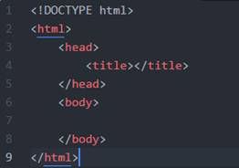
-
就像下面這樣，這樣子網頁就可以顯示你剛剛打的內容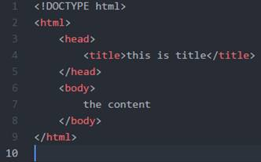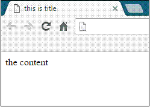< head >就是包一些跟網頁本身有關的東西 < body >就是會ft現在頁面裡面的東西。
-
這是簡單可以改變字體大小的標籤。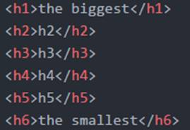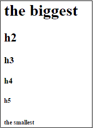
-
另外，< br >可以用來換行，不然你在檔案裡不管按了幾個 enter 都還是只有換 一行而已。要注意的是，HTML 的標籤，大部分都有前後標，像是 < body > < /body >這樣。不過< br >就是一個不需要尾標的範例。
-
當然你也可以製作一個表格。注意< tr >在外，< td > 在內。 < table>標籤內的 border 可以設定外框。第 二個 table 中的< td >裡的 colspan 表示延伸兩格， 像是合併儲存格的感覺。如果是 rowspan 就是往下 合併。右邊的 code 看起來就像這樣。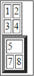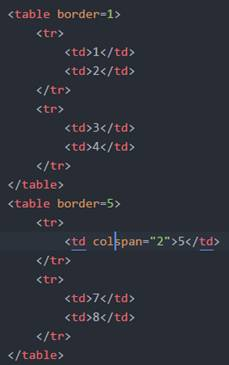
-
此外，你也可以製作一個列表。每個列表項目都是一個<li>標籤中的文字內容， 當然也可以不是文字。通常，在<li>的外面會有個 <ol>或是<ul>，分別表示有序列表(order list)跟 無序列表(unorder list...?)。如果在外面沒有加上 <ol>或是<ul>的話，預設會變成<ul>的樣式，但是邏輯上他就不成一串列表只是單一項的物件 了。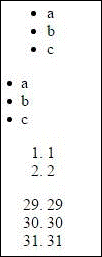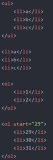
以上是一些 HTML 的常用功能、接下來是 JavaScript。
Chapter3—基本 Javascript
-
Javascript 其中一個功能是創造一個新元素，就像這樣。我們先在 HTML 檔案內 寫上一個 id 是 a 的 div。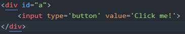
-
然後在 script 標籤內用 JavaScript 創造了一個 input 元素，指定為按鈕型態跟 他的值之後，就把他 append 在剛剛創造的 div 裡面。如果以原本的 HTML 寫 起來就像是這樣。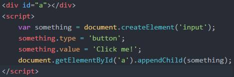在網頁中開啟就會像是這樣 ========>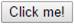
-
我們還可以把按鈕多加一些功能，如果你希望按下去之後就跳ft視窗之類的，可 以這樣：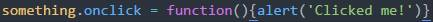
-
另外還有一些像是 confirm，prompt 之類的彈ft式視窗，可以自己試試看。
JavaScript 是功能非常強大的語言，上課教的都只是它的一小部 分，還有更多更多的功能等著你們自己探索！
Chapter４—CSS 的使用
-
CSS的部份我們就不多講，只要知道如何套版並新增/修改自己喜歡的樣式即可
-
這個範例中，我們修改了：
<p>標籤內的字體大小和字型
<h5>標籤內的字體顏色和背景顏色
新增了 custom-font 這個 class 並 指定他的字體顏色、背景顏色、字 體粗細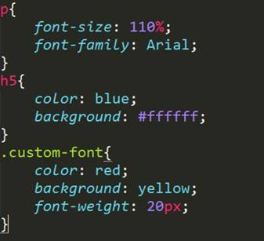 -
仿照相同的方法就可以修改其他的屬性囉
這裡列ft一些常用的屬性，其實在 網路上都可以搜尋到喔。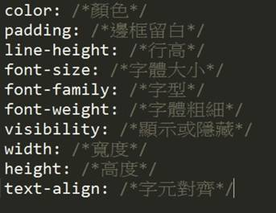-
要製作精美的網頁我們通常不會自 己製作複雜的 CSS，我們會使用如 Bootstrap、HTML5 up、 Materialize 等現成的的模板來用， 要注意的是，不同的板有的使用方 式，網站上都會有詳細的說明，使用前務必看仔細！